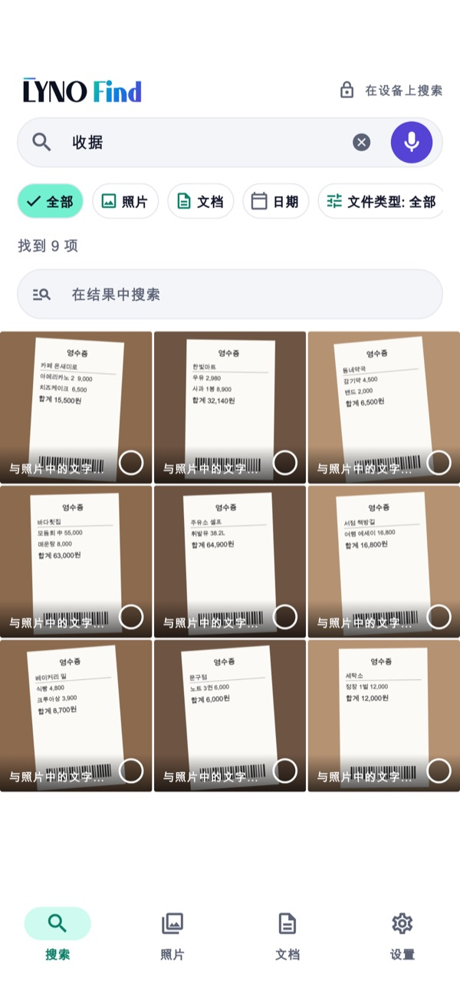

提高搜索准确度的方法
1. 只输入要找的词
只写想找的内容最准确。会同时查找照片中的画面、照片里的文字和文档内容。暂不搜索视频。

示例: 猫 收据 Wi-Fi密码
2. 按文件夹名称搜索
输入已开启的智能文件夹名称,该文件夹的照片也会显示在结果下方。用空格分开输入两三个,只显示同时属于这些文件夹的照片。
示例: 狗 海滩 日落
3. 多个词用句号分开 · 多词搜索
用句号(.)或逗号(,)分开就是多词搜索。先显示全部都有的照片,再显示只有部分的照片。放大照片时会分别显示每个词找到了几处。
只用空格时会按整句查找,适合找文档里的原句。
结果上方会显示全部都有的照片数和每个词各自的照片数。用空格搜索结果较少时,会出现“分开查找”按钮。
先用空格，要找多样东西再用句号。用空格分开（日本 海）只留下全部符合的照片，范围窄而准确。用句号分开（狗。猫。海）每个词分别搜索后一起显示，全部都有的照片排在前面。用空格搜索结果少时，点“分开查找”。
示例: 狗. 猫. 海
4. 直接说出来 · 语音搜索
按下麦克风说话,只挑出需要的词,先显示同时出现的照片。
iPhone · Siri不用打开应用，对 Siri 说“在 LYNO Find 里找”，Siri 问要找什么时回答“狗的照片”之类的话，就只显示照片。回答“合同文档”只显示文档，只说“狗”则两者都找。
在LYNO Find里找 在LYNO Find里搜索 用LYNO Find搜索一下 在LYNO Find里找文档
长按应用图标并点“语音搜索”，或点主屏幕小组件上的麦克风，即可马上用语音查找。
示例: 找在海边和猫一起拍的照片
5. 加上拍摄地点和日期
把要找的内容和拍摄地点一起输入,就会根据照片里保存的位置,只在那个地方拍的照片中查找。也可以直接说"找在日本拍的海边照片"。还可以加上拍摄时间。
示例: 日本 海边 上海 自拍 去年夏天 海 2026年10月 收据
6. 在结果中再找一次
在结果上方的"在结果中搜索"输入另一个词,只在当前结果中查找。例如:先找海,再在其中找猫